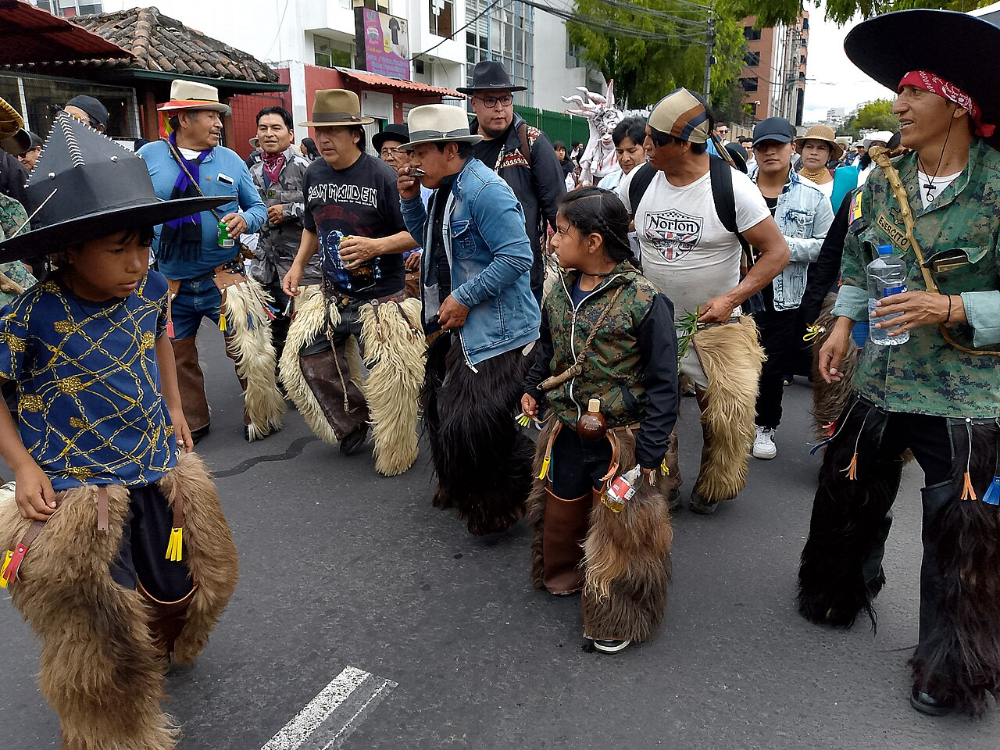
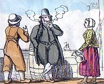
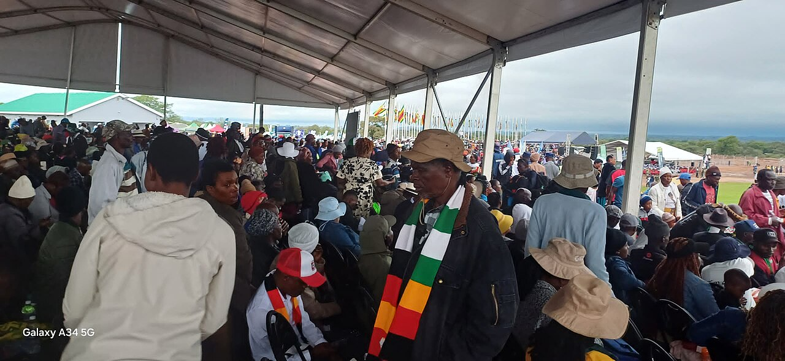
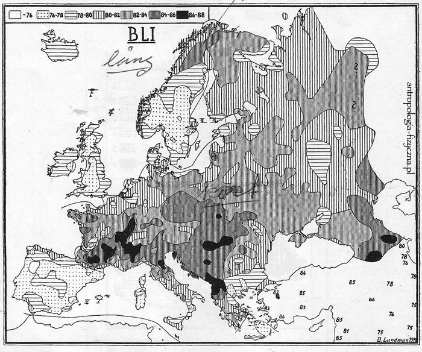

Race & Ethnicity
Walk through any city and people sort one another at a glance — Black or white, Hutu or Tutsi, English or Kurd — as if these boxes were stamped into the body. They are not. A century of anthropology has shown that race is a social invention with no biological reality, that ethnicity is a boundary a group draws and redraws rather than a fixed essence in the blood, and that the nation itself is a community imagined into being. This chapter separates the folk beliefs from the evidence: why there are no biological races, how ethnic and national identities are actually made, how racism keeps working even without racist individuals, and how anthropologists — Franz Boas above all — took apart the scientific racism of their own century.
By the end of this chapter you can
- Explain why race is a social construction rather than a valid biological division of humankind.
- Use clines and within-population variation to show why folk “races” do not hold up biologically.
- Define ethnicity and explain Fredrik Barth's argument that ethnic groups are held together by boundaries, not fixed cultural content.
- Distinguish prejudice, discrimination, and institutional (structural) racism.
- Explain Benedict Anderson's imagined community and how nations are constructed.
- Contrast primordialist, instrumentalist, and constructivist accounts of ethnicity and nationhood.
- Describe how Franz Boas and his successors dismantled scientific racism.
- Read historical race science (craniometry, the cephalic index) as a cultural artifact, not as fact.
Section 1Race as a construction

There is more difference within than between
The commonsense view treats race as biology: humankind supposedly divides into a few great stocks — Linnaeus once named four, Blumenbach five — each marked by skin color, hair, and skull shape, each breeding true down the generations. Genetics dismantled this picture. In a famous 1972 analysis the geneticist Richard Lewontin found that roughly 85% of all human genetic variation lies within any single local population; about 8% more separates populations within a so-called race, and only about 6% distinguishes the classic continental “races” from one another. Two people from the same Nigerian village can differ from each other more than either differs from a Norwegian. Traits also vary independently — skin color, blood type, and the ability to digest milk do not travel together in neat packages — so the packages are in the eye of the classifier, not in the biology. Humans are a young, restless, thoroughly interbred species.
Traits fall in clines, not boxes
Most human variation is clinal: it changes gradually across geography rather than jumping between bounded types. Skin pigmentation tracks ultraviolet radiation and latitude, and dark skin evolved repeatedly and independently near the equator — in Central Africa, in South India, in Melanesia, in Aboriginal Australia. Those populations are not one “race”; they simply share an adaptation to strong sun. Draw a color line anywhere on that gradient and the line is arbitrary. The sickle-cell trait tells the same story: it maps onto the historic range of malaria — West Africa, the Mediterranean, Arabia, India — not onto any folk race. Where the biology is a smooth slope, the boxes are cultural.
Same bodies, different races
The decisive proof that race is made is that the same person is classified differently in different societies. The United States runs on hypodescent — the “one-drop rule,” where any African ancestry makes a person Black, a rigid binary found nowhere in nature. Brazil instead uses a fluid spectrum of dozens of color terms (branco, pardo, moreno, preto) assigned by appearance and wealth, so that full siblings may be classed as different colors and, as the saying and the anthropology both note, “money whitens” (Marvin Harris, Conrad Kottak). Apartheid South Africa fixed race by law: the Population Registration Act of 1950 assigned every person to an official category, and classification boards could and did reclassify individuals by decree — sometimes splitting a single family. And in colonial Rwanda the Belgians hardened the fluid Hutu/Tutsi statuses into racial castes with identity cards and the pseudo-scientific “Hamitic hypothesis” — a fiction that helped make the 1994 genocide thinkable (Mahmood Mamdani). Because race is assigned by rules that differ from place to place and time to time, it is, in the phrase of Michael Omi and Howard Winant, a racial formation — a social construction, not a discovery.
| Society | Rule for assigning race | Result |
|---|---|---|
| United States | Hypodescent — any Black ancestry counts as Black | Rigid binary; mixed-ancestry people classed as Black |
| Brazil | Appearance plus wealth; dozens of color terms | Fluid continuum; siblings may differ; “money whitens” |
| South Africa (apartheid) | The Population Registration Act (1950) assigned White / Coloured / Indian–Asian / Black | State-enforced; individuals reclassified by decree |
| Rwanda (colonial) | Belgian ID cards froze Hutu/Tutsi by cattle and measurement | Fluid status turned into hereditary racial caste |
- Race is a social classification, not a biological one: most human genetic variation sits within populations, and traits vary in clines, not packages.
- The same individual is racialized differently in the US, Brazil, South Africa, and colonial Rwanda — proof the categories are made, not found.
- Hypodescent (the US “one-drop rule”) is a cultural rule, not a law of heredity.
- “Constructed” does not mean “unreal”: race shapes wealth, health, and survival.
Section 2Ethnicity and identity

A sense of shared peoplehood
Ethnicity is a group's sense of shared descent, history, and culture — expressed through language, religion, homeland, food, dress, and a common name. Where race is imposed from outside and read off the body, ethnicity is usually claimed from within; it is about belonging, about a “we.” The distinction shows up in naming itself: the emic label a group uses for itself often differs from the etic label outsiders apply — the people others long called Navajo call themselves Diné; the Inuit were labeled Eskimo. Ethnic groups typically imagine a putative common ancestry, a family writ very large, even when the actual genealogy is thin or invented.
Barth: it is the boundary, not the contents
Fredrik Barth's Ethnic Groups and Boundaries (1969) overturned the older view. Before Barth, anthropologists treated an ethnic group as a “culture-bearing unit” — one people, one bounded, distinctive culture. Barth flipped the emphasis: what defines a group is the boundary it maintains, not the cultural “stuff” behind the boundary. Cultural content can change completely, and can even flow across the line, while the line itself persists. His frontier example is famous: on the Afghan–Pakistan borderland a Pathan who could no longer sustain Pathan norms of honor and hospitality could, in effect, “become Baluch” — cross the ethnic boundary — even as Pathan and Baluch remained separate identities. Ethnicity is therefore relational: there is no “us” without a “them.” It is also situational and nested — a person may be Yoruba at home, Nigerian abroad, and African in a still wider frame, with the salient identity shifting by context.
Primordial or instrumental?
Two long debates organize the field. Primordialism, associated with Clifford Geertz's notion of “primordial attachments,” stresses that ethnic bonds feel ancient, given, and deeply emotional, as if lodged in the blood. Instrumentalism counters that ethnicity is a resource, mobilized by leaders to compete for jobs, land, and votes — ethnic entrepreneurs rallying a following. Constructivism, the mainstream position today, holds that ethnic groups are made and remade in history, often quite recently, through ethnogenesis. Colonial states, for instance, frequently invented the “tribes” they claimed merely to govern — drawing map lines, appointing chiefs, and codifying “customary law” that froze once-fluid groupings. The honest answer blends all three: identities are felt as primordial, mobilized instrumentally, and constructed historically, all at once.
| Approach | Core claim | Associated with |
|---|---|---|
| Primordialism | Ethnic ties are ancient, given, felt as kinship | Geertz (“primordial attachments”) |
| Instrumentalism | Ethnicity is mobilized as a political or economic resource | Abner Cohen; “ethnic entrepreneurs” |
| Constructivism | Ethnic groups are made and remade in history (ethnogenesis) | Barth; Anderson |
- Ethnicity is a claimed sense of shared descent, history, and culture — asserted from within, whereas race is imposed from outside.
- Barth: ethnic groups are defined by the boundaries they maintain, not by a fixed cultural content that can change and cross over.
- Identities are relational and situational — “we” needs a “them,” and which identity is salient shifts by context.
- Explanations run from primordialism (Geertz) to instrumentalism to constructivism; most real cases mix all three.
Section 3Racism

Prejudice, discrimination, and the difference that matters
Two words are easy to confuse and important to keep apart. Prejudice is an attitude — a pre-judgment, usually negative and stubbornly resistant to evidence, expressed as a stereotype about a group. Discrimination is an action — treating people unequally because of the group they belong to. The two can come apart, as the sociologist Robert Merton showed: there are prejudiced people who never act on it (the “timid bigot”) and unprejudiced people who discriminate anyway because a biased system rewards it (the “fair-weather liberal”). Racism proper is the doctrine and the system that ranks racial groups and uses the ranking to justify unequal treatment — prejudice joined to power.
Racism you cannot see: institutional and structural
The most important move in modern anthropology and sociology was to recognize that racism need not live in hostile individuals at all. Institutional or structural racism is disadvantage built into the ordinary, seemingly neutral workings of institutions — housing, lending, schooling, policing, health care — that reproduce racial inequality even when no single actor is consciously bigoted. The classic case is redlining: government mortgage maps that denied loans to Black neighborhoods for decades, a policy whose imprint still shapes the racial wealth gap. Unequal school funding tied to local property taxes, and disparities in sentencing and bail, work the same way. Eduardo Bonilla-Silva calls the modern version “racism without racists,” a color-blind racism that defends inequality in the language of markets and merit rather than biology. Anthropologists connect this to structural violence (Johan Galtung, Paul Farmer) — harm inflicted by unjust arrangements rather than by a fist — and to ethnographies like Philip Bourgois's In Search of Respect, which traced how structural exclusion funneled young men in East Harlem into the underground economy.
How racism changes costume
Racism is not static; it re-narrates itself to survive. The older biological racism — inferior blood, inferior brains — was discredited after the Second World War, so it largely mutated into cultural racism, sometimes called the “new racism”: the claim that certain groups have deficient values or culture rather than inferior genes. The vocabulary is safer but the work is identical — to justify a hierarchy. Recognizing this is exactly why anthropologists insist on watching what systems do, not only what individuals say.
| Level | What it is | Example |
|---|---|---|
| Prejudice | A prejudged attitude or stereotype held in the mind | Believing a group is lazy or criminal |
| Individual discrimination | Unequal treatment by a person | A landlord rejecting a tenant by name or accent |
| Institutional / structural | Inequality built into an institution's normal operation | Redlining; unequal school funding; sentencing gaps |
- Prejudice is an attitude; discrimination is an action; they can occur separately (Merton).
- Racism = prejudice backed by power — a system that ranks groups and rations resources.
- Institutional / structural racism reproduces inequality through “neutral” institutions without requiring bigoted individuals (redlining; Bonilla-Silva's “racism without racists”).
- After 1945, biological racism largely mutated into cultural racism — same hierarchy, safer language.
Section 4Nationalism

Nation, state, and nation-state
Three words that everyday speech runs together must be pulled apart. A state is a political and administrative apparatus that claims sovereign authority over a territory — the most complex form in anthropology's classic band–tribe–chiefdom–state series. A nation is a people who imagine themselves a single community entitled to self-rule. A nation-state fuses the two, embodying the modern ideal that political borders should coincide with a single “people.” But almost no actual state is ethnically homogeneous, which means the nation is always partly a project rather than a fact — something built, taught, and celebrated into existence.
Anderson: the imagined community
Benedict Anderson's Imagined Communities (1983) gave the field its defining phrase. The nation, he wrote, is “an imagined political community — and imagined as both inherently limited and sovereign.” Imagined, because a citizen will never meet more than a sliver of the compatriots she nonetheless feels bound to in “a deep, horizontal comradeship.” What made such imagining possible, Anderson argued, was print capitalism: newspapers and novels in a shared vernacular let scattered strangers picture themselves moving together through the same “empty, homogeneous time.” The colonial census, map, and museum then taught subject populations to see themselves as bounded nations. Crucially, imagined does not mean imaginary: the attachment is real enough that people kill and die for it.
Nations make traditions, and traditions make nations
Two further classics fill out the picture. Ernest Gellner argued that nationalism creates nations, not the reverse: industrial society needs a mobile workforce sharing one standardized “high culture,” delivered by mass schooling, and nationalism is that need turned into ideology. Eric Hobsbawm and Terence Ranger, in The Invention of Tradition, showed that many “timeless” national customs are recent fabrications — the Scottish clan tartan and the kilt as national emblems were largely eighteenth- and nineteenth-century inventions. Against a purely modernist story, Anthony Smith's ethnosymbolism insists that most modern nations are built on a pre-existing ethnic core — an ethnie of shared myths, memories, and symbols. Nationalism itself comes in two keys: civic (membership through shared institutions and citizenship) and ethnic (membership through descent). The ethnic key, pushed to its extreme, shades into exclusion and, at its worst, ethnic cleansing.
| Theory | Claim | Key figure / work |
|---|---|---|
| Primordialism | Nations are ancient, natural, given units | Folk and nationalist view (widely critiqued) |
| Modernism | Nations are modern constructs of print, industry, and schooling | Anderson, Imagined Communities; Gellner |
| Invention of tradition | “Timeless” national customs are recent fabrications | Hobsbawm & Ranger |
| Ethnosymbolism | Modern nations build on older ethnic cores (ethnie) | Anthony Smith |
- A state is a governing apparatus; a nation is an imagined people; the nation-state ideal (one people = one state) is almost never literally true.
- Anderson: the nation is an imagined community — limited, sovereign, felt as horizontal comradeship — enabled by print capitalism.
- Gellner ties nationalism to industrial society's need for a shared high culture; Hobsbawm shows many national “traditions” are recent inventions.
- Nationalism can be civic or ethnic; ethnic nationalism shades toward exclusion and violence.
Section 5Anthropology and race

The science that built race
For a century the prestige of science was enlisted to prove racial hierarchy. Linnaeus (1758) sorted Homo sapiens into four varieties with temperaments attached; Johann Blumenbach named five and coined the flattering term “Caucasian.” Samuel Morton packed skulls with seed and lead shot to rank “cranial capacity” in his Crania Americana (1839) — work later re-examined by Stephen Jay Gould in The Mismeasure of Man as a case study in how bias shapes data. Nott and Gliddon's Types of Mankind (1854) preached polygenism, the claim that the races were separate creations, to defend American slavery. The cephalic index — the ratio of skull breadth to length — became the obsession of European race science and, later, of the eugenics movement. All of it was scientific racism: social hierarchy dressed up as measurement.
Boas takes it apart
Franz Boas — German-born, and the father of American four-field anthropology — led the demolition. His method was cultural relativism (judge a culture by its own standards, not by a European yardstick) and historical particularism (each culture is the product of its own particular history, not a rung on one universal ladder), both aimed squarely at the racial evolutionism of the day. His empirical bombshell came in Changes in Bodily Form of Descendants of Immigrants (1912), a study for the US immigration commission in which he measured thousands of immigrants and their American-born children. He found that head form — the supposedly fixed racial marker, the very cephalic index — shifted within a single generation in the new environment. If the master trait of race science was that plastic, race could not be the rigid biological essence it was claimed to be. Boas then trained the generation that carried the argument forward: Ruth Benedict, Margaret Mead, Zora Neale Hurston, Ella Deloria, Alfred Kroeber, and Melville Herskovits.
From Boas to the modern consensus
The dismantling continued past Boas. Ashley Montagu, one of his students, wrote Man's Most Dangerous Myth: The Fallacy of Race (1942) and then drafted the UNESCO Statement on Race (1950), which told a post-Holocaust world that race is a social myth rather than a biological fact and that no evidence tied race to intelligence or the capacity for civilization. Modern genetics confirmed the point (Lewontin, 1972). The American Anthropological Association's Statement on Race (1998) said it plainly: race is a folk idea that arose with European colonialism and slavery, not a fact discovered in nature. Anthropology's settled position today is twofold: human biological variation is real, important, and worth studying — but it is clinal, not racial; and “race” is best studied as what it actually is, a powerful social reality with a lethal history.
| Figure / work | Contribution |
|---|---|
| Boas, “Changes in Bodily Form…” (1912) | Showed head form (the cephalic index) changes in one generation — race is not fixed biology |
| Boas's students (Benedict, Mead, Hurston, Deloria) | Spread cultural relativism; separated the ideas of race, language, and culture |
| Montagu, Man's Most Dangerous Myth (1942) | Argued race is a social myth; drafted the UNESCO statement |
| UNESCO Statement on Race (1950) | Post-Holocaust declaration: race is a social construct, not biology |
| Lewontin (1972); AAA Statement (1998) | Genetics and the discipline confirm: there are no biological races |
- Scientific racism (Linnaeus, Blumenbach, Morton, Nott & Gliddon, the cephalic index, eugenics) used the authority of science to justify hierarchy and slavery.
- Boas dismantled it with cultural relativism, historical particularism, and his 1912 study showing head form is environmentally plastic.
- His students and Ashley Montagu carried the argument into the 1950 UNESCO Statement on Race.
- Modern genetics (Lewontin) and the AAA (1998) confirm: race is a social reality, not a biological division of humankind.
The chapter in one breath
- Race is a social construction: most genetic variation is within populations, traits fall in clines, and the same body is raced differently in the US, Brazil, South Africa, and colonial Rwanda.
- “Constructed” is not “unreal” — race shapes wealth and health and, in genocide and apartheid, survival.
- Ethnicity is a claimed sense of shared descent, maintained at a boundary (Barth), relational and situational, and explained by primordialism, instrumentalism, or (mainly) constructivism.
- Racism runs from prejudice (attitude) to discrimination (act) to institutional/structural racism that reproduces inequality without bigots (redlining; Bonilla-Silva).
- The nation is an imagined community (Anderson) built by print, schooling, and invented tradition (Gellner; Hobsbawm), civic or ethnic in form.
- Scientific racism (Morton, Nott & Gliddon, the cephalic index, eugenics) dressed hierarchy up as measurement.
- Franz Boas took it apart — cultural relativism plus his 1912 study showing head form is plastic — and his students, Montagu, and the 1950 UNESCO statement finished the job.
- Anthropology's verdict: human variation is real but clinal; race and ethnicity are social facts, and studying how they are made is the discipline's contribution.
ReferenceWords worth knowing
A quick reference for the terms in this chapter — skim it now, or circle back whenever a word trips you up.
- Assimilation
- The process by which a minority group takes on the culture of a dominant group; never automatic, because ethnic boundaries can persist even as cultural content changes.
- Cline
- A gradual, continuous change in a trait across geography (as with skin color and latitude); human biological variation is largely clinal rather than divided into bounded races.
- Constructivism
- The mainstream view that ethnic and national groups are made and remade in history — often recently — rather than being ancient givens; the position behind ethnogenesis.
- Cultural racism
- The “new racism” that replaced discredited biological claims after 1945: the assertion that a group's values or culture, rather than its genes, make it inferior. Same hierarchy, safer vocabulary.
- Cultural relativism
- Boas's principle that a culture should be understood and judged by its own standards, not ranked against an outside yardstick.
- Diaspora
- A population dispersed from an original homeland who retain a shared identity and ties across the places they now live.
- Discrimination
- Action: treating people unequally on the basis of their group membership (as distinct from prejudice, an attitude).
- Emic and etic
- An emic account uses the categories and meanings of the people themselves (Diné); an etic account uses the analyst's or outsider's categories (Navajo). Ethnic labels frequently differ between the two.
- Ethnic boundary
- In Barth's theory, the socially maintained line that separates one group from another; ethnicity resides in the boundary, not in fixed cultural content.
- Ethnicity
- A group's sense of shared descent, history, and culture, usually claimed from within and expressed through markers such as language, religion, and dress.
- Ethnogenesis
- The historical process by which a new ethnic group comes into being, often through colonialism, migration, or political mobilization.
- Ethnosymbolism
- Anthony Smith's argument that modern nations are not invented from nothing but built on a pre-existing ethnic core (an ethnie) of shared myths, memories, and symbols.
- Eugenics
- The early-twentieth-century movement to “improve” human heredity by controlling reproduction; a chief application of scientific racism.
- Hypodescent
- A rule assigning mixed-ancestry people to the subordinate group; in the US, the “one-drop rule” that classes anyone with African ancestry as Black.
- Imagined community
- Benedict Anderson's definition of the nation: a community imagined as limited and sovereign, felt as deep comradeship among people who will never meet.
- Institutional (structural) racism
- Inequality built into the normal operation of institutions — housing, lending, schooling, policing — that reproduces racial disadvantage without requiring bigoted individuals.
- Instrumentalism
- The view that ethnicity is a resource mobilized by leaders to compete for jobs, land, and votes, rather than an ancient sentiment (associated with Abner Cohen).
- Invention of tradition
- Hobsbawm and Ranger's term for ostensibly ancient customs that are in fact recent creations serving present purposes, such as national ceremonies and symbols.
- Nation
- A people who imagine themselves a single community entitled to self-rule — distinct from the state, which is the governing apparatus.
- Nationalism
- The ideology that a people (a nation) should have its own sovereign state; may be civic (by citizenship) or ethnic (by descent).
- Nation-state
- A state whose borders are claimed to coincide with a single nation; an ideal that few real states actually meet.
- Phenotype
- An organism's observable traits (such as skin color or head shape), produced by genes and environment together; the visible features on which folk race is read.
- Prejudice
- Attitude: a pre-judged, usually negative belief or feeling about a group, resistant to contrary evidence.
- Primordialism
- The view that ethnic and national ties are ancient, given, and deeply emotional, felt as a kind of extended kinship (associated with Geertz).
- Race
- A social classification of people by supposed biological type; a construction, not a valid biological division of humankind.
- Racial formation
- Omi and Winant's term for the historical, political process through which racial categories are created, inhabited, and transformed.
- Racism
- Prejudice joined to power: a doctrine and a system that ranks racial groups and uses the ranking to justify unequal treatment. It may operate through individuals or through institutions.
- Scientific racism
- The use of scientific-seeming methods (craniometry, the cephalic index) to justify racial hierarchy; discredited by Boas and later work.
- Situational ethnicity
- The way an individual's salient identity shifts with context — local, national, or continental depending on the setting.
- State
- A political and administrative apparatus claiming sovereign authority over a territory; the most complex form in the classic band–tribe–chiefdom–state series.